Швеция - Шведская крона
20 крон
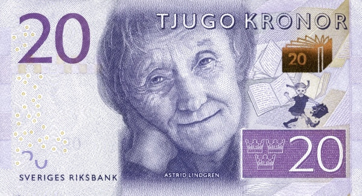 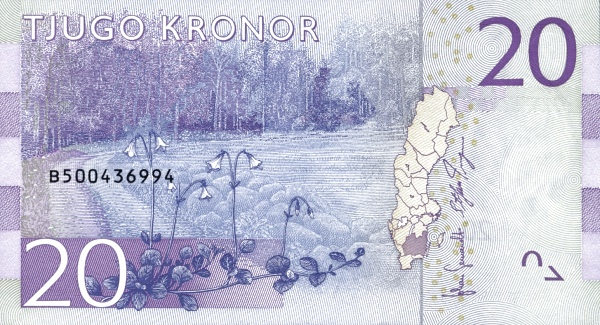Лицевая сторона - Писательница Астрид Линдгрен
Обратная сторона - Смоланд
50 крон
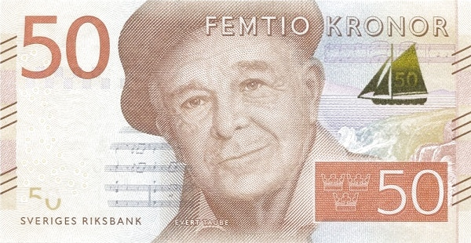 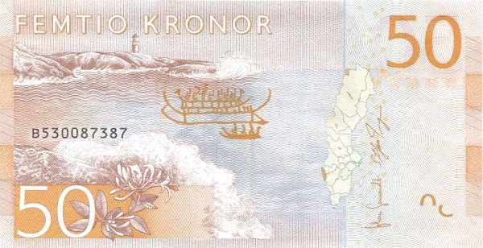Лицевая сторона - Поэт, композитор и художник Эверт Таубе
Обратная сторона - Бохуслен
100 крон
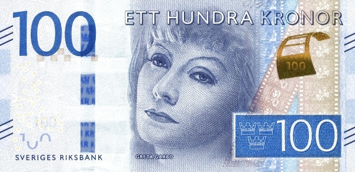 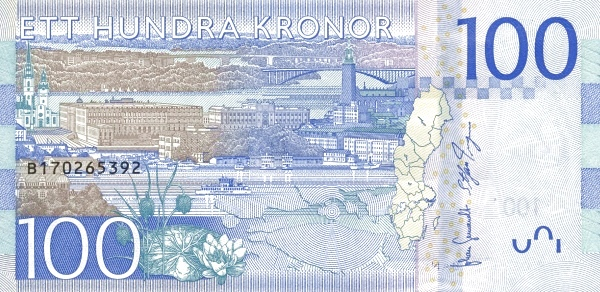Лицевая сторона - Актрис Грета Гарбо
Обратная сторона - Стокгольм
200 крон
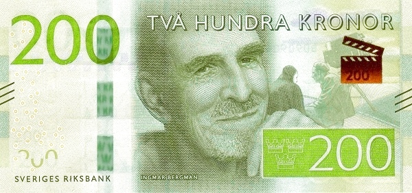 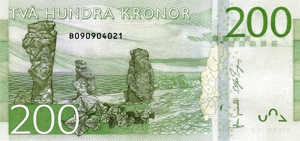Лицевая сторона - Режиссер Ингмара Бергмана
Обратная сторона - Остров Форё
500 крон
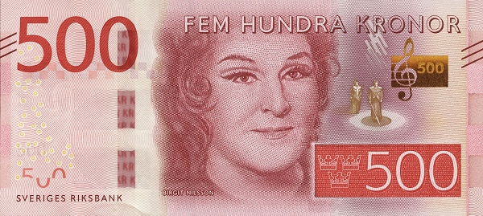 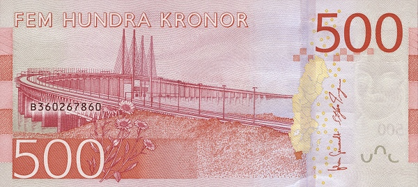Лицевая сторона - Оперная певица Биргитаа Нильссон
Обратная сторона - Эресуннский мост в лене Сконе
1000 крон
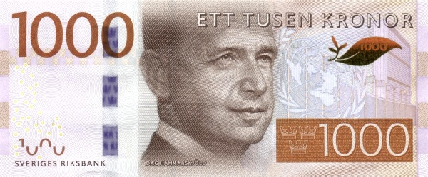 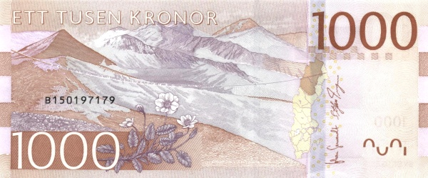Лицевая сторона - Генеральный секретарь ООН, член Шведской академии Даг Хаммаршёльд
Обратная сторона - Лаппландия